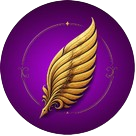

✿ Sobre Mim

Olá! Meu nome é Andréia. Sou uma pessoa curiosa, criativa e apaixonada por tecnologia e literatura. Gosto de aprender coisas novas, explorar jogos, tocar instrumentos musicais e descobrir como os aparelhos são desenvolvidos através da robótica. Atualmente, estou aprendendo HTML e CSS para criar minhas próprias páginas, participo de competições de robótica e estou finalizando o StoryFlow, um site para ajudar na leitura e escrita de jovens.
♡ Meus Hobbies e Interesses
- Programação e desenvolvimento de sites
- Ler e falar sobre livros
- Ouvir música
- Jogos de carta
- Aprender sobre tecnologia
✧ Meus Objetivos
- Desenvolver meus projetos pessoais.
- Aprender mais programação.
- Montar um portfólio com meus melhores projetos.
- Estagiar no ramo da tecnologia.
- Fazer faculdade no exterior.
✦ Um pouquinho do meu projeto
Um dos projetos em que estou trabalhando é o StoryFlow! 📚
Ele foi criado com a ideia de ajudar jovens com a leitura e a escrita. É muito legal poder transformar uma ideia em algo real e acompanhar sua evolução!
Conheça o StoryFlow ↗ (abre em uma nova aba)